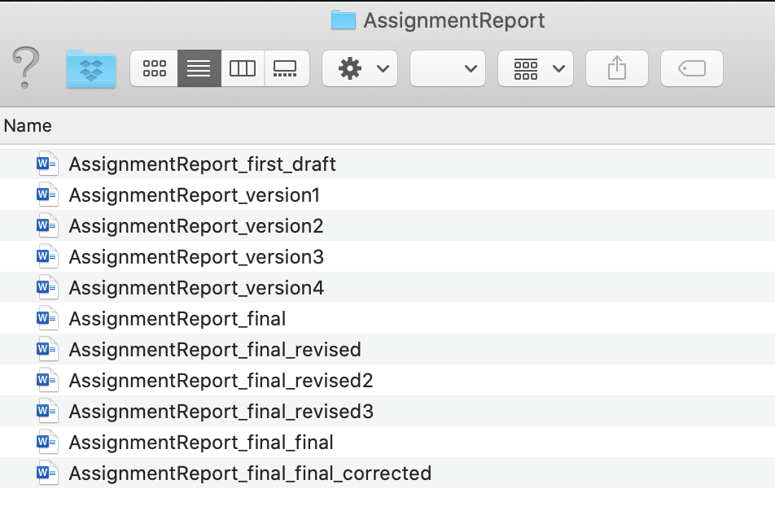
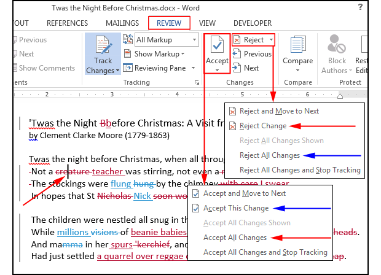

class: title-slide, center, middle # Version control and social coding ## Robert Castelo ### Dept. of Experimental and Health Sciences ### Universitat Pompeu Fabra .footnote[[robert.castelo@upf.edu](mailto:robert.castelo@upf.edu)] ## Fundamentals of Computational Biology ### BSc on Human Biology ### UPF School of Health and Life Sciences ### Academic Year 2020-2021 --- ## Document versioning * Document versioning: keeping different versions of the same document. * Using multiple files with different names is often the way to keep different versions of the same document. * Following up the most recent version of a document or recovering a specific version can become difficult without a file naming convention or strategy.  <img style="float:right; margin-right:50px;" src="xkcdnamingfiles.png" width=25%> <div class="footer"> <p style="float:right;"> Right image from <a href="https://xkcd.com/1459" target="_blank">xkcd</a> </p> </div> --- ## Document comparison * We may want to keep track not only of our own edits but of the edits of other individuals on the same document. * Current word processing software incorporates automatic ways of [document comparison](https://en.wikipedia.org/wiki/Document_comparison) that allows one to keep track of how the document is being edited and eventually accept or reject those edits.  .footer[ Image from "How to track changes in Microsoft Word without going insane". [PC World, Feb 4, 2015](https://www.pcworld.com/article/2861859/how-to-track-changes-in-microsoft-word-without-going-insane.html)] --- ## Version control systems * In software development, software projects can involve a very large number of files, which change constantly during development. * To handle different versions of files and their concurrent alterations, software tools called [version control systems (VCS)](https://en.wikipedia.org/wiki/Version_control) have been developed. * VCS provide two fundamental features: 1. Time snapshots of file changes. 2. Manage changes and conflicts introduced by multiple individuals on the same files. * There are many different VCS, some of the most well-known are: * [CVS](https://en.wikipedia.org/wiki/Concurrent_Versions_System) * [SVN](https://en.wikipedia.org/wiki/Apache_Subversion) * [Git](https://en.wikipedia.org/wiki/Git) * CVS can be classified into centralized systems (CVS, SVN) or distributed (Git). --- ## What's social coding ## Main branch [renaming](https://github.com/github/renaming) [renaming techrepublic](https://www.techrepublic.com/article/github-to-replace-master-with-main-starting-in-october-what-developers-need-to-know) [master/slave technology](https://en.wikipedia.org/wiki/Master/slave_%28technology%29)